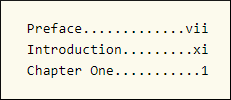

CSS Level 3 target-counter() and target-counters() Functions
The CSS Level 3 functions target-counter and target-counters can be used as
values for the content property to retrieve counter values and display
information obtained from a target at the end of a link.
The target-counter Function
This function retrieves the value of the innermost counter with a given name.
- fragment
-
The URI fragment pointing to the ID of the target element.
- counter-name
-
The name of the counter. This argument is required.
- counter-style
-
This optional argument can be used to format the result.
Example:
<nav>
<ol>
<li class="frontmatter"><a href="#pref_01">Preface</a></li>
<li class="frontmatter"><a href="#intr_01">Introduction</a></li>
<li class="bodymatter"><a href="#chap_01">Chapter One</a></li>
</ol>
</nav>.frontmatter a::after { content: leader('.') target-counter(attr(href), page, lower-roman) }
.bodymatter a::after { content: leader('.') target-counter(attr(href), page, decimal) }Result:

The target-counters Function
This function fetches the value of all counters of a given name from the end of a link and formats them by inserting a given string between the value of each nested counter.
- fragment
-
The URI fragment pointing to the ID of the target element.
- counter-name
-
The name of the counter. This argument is required.
- delimiter
-
The string to be inserted between the value of each nested counter. This argument is required.
- counter-style
-
This optional argument can be used to format the result.